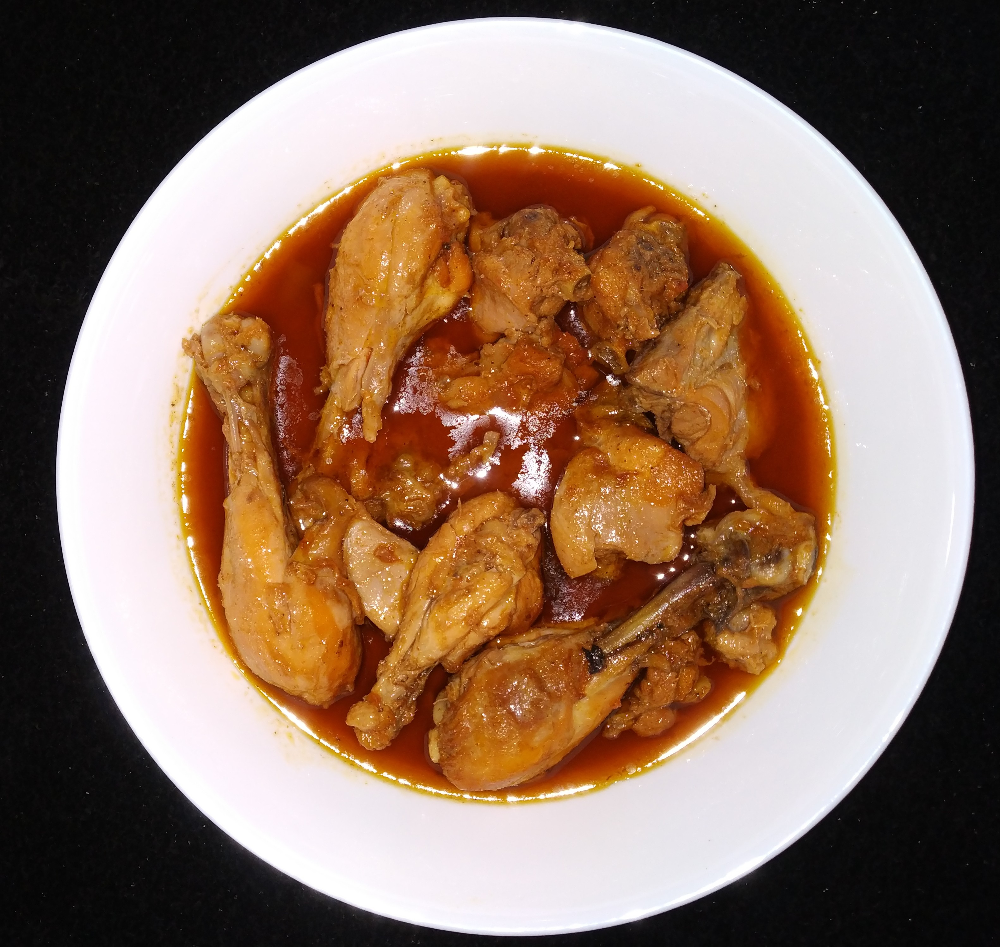

/home
Chicken Korma

Description:
Chicken korma is a rich and creamy curry made with chicken cooked in a blend of yogurt, spices, and onions. It is known for its mild flavor and smooth gravy, making it a favorite for special meals and family gatherings.
Often served with naan or rice, chicken korma is both filling and flavorful. The slow cooking helps the chicken absorb the spices, creating a delicious and comforting dish.
Key ingredients:
- Chicken
- Yogurt
- Onions
- Cooking oil
- Salt
- Spices
- Water
Steps to make Korma:
- Prepare Base - Heat oil or ghee and fry onions until golden brown.
- Add Chicken - Stir in chicken pieces with garlic, ginger, and spices; cook for a few minutes.
- Mix Yogurt - Add whisked yogurt and cook until it blends with the spices.
- Simmer - Pour in water and let the chicken cook on low heat until tender.
- Garnish - Sprinkle fresh coriander leaves before serving.